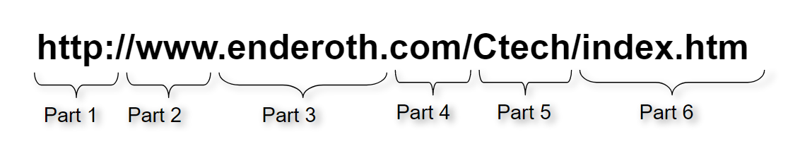

This is a template for a simple marketing or informational website. It includes a large callout called a jumbotron and three supporting pieces of content. Use it as a starting point to create something more unique.
Domain names are easy to remember words that we can use to communicate to a DNS server the website you want to visit. The Domain Name System (DNS) is what translates the friendly name to an IP address. The domain name hides the IP address that most people aren't interested in seeing or using, like the 172.217.23.14 address used by google.com.
A domain is created using the following 6-step protocol
Part 1 - Transfer Protocol http:// – Hypertext Transfer Protocol https:// – Hypertext Transfer Protocol, Secure ftp:// - File Transfer Protocol for FTP site. Allows upload/download of files.
Part 2 – www (which part of internet is being addressed)
Part 3 – domain name – name of organisation that controls the site that the page is stored on
Part 4 – indicates the type of organisation (.co/.sch/.gov/.edu/.org etc)
Part 5 – the name of the folder
Part 6 – the name of the file and file extension
In computing, a hyperlink, or simply a link, is a reference to data that the reader can directly follow either by clicking, tapping, or hovering.A hyperlink points to a whole website or to a specific element within a website.
By default, a link will appear like this (in all browsers):
a:link {
color: green;
background-color: transparent;
text-decoration: none;
}
a:visited {
color: pink;
background-color: transparent;
text-decoration: none;
}
The Sitemaps protocol allows a webmaster to inform search engines about URLs on a website that are available for crawling. A Sitemap is an XML file that lists the URLs for a site
Sitemaps are important for SEO because they make it easier for Google to find your site's pages this is important because Google ranks web PAGES not just websites.
A site map is a list of pages of a web site accessible to crawlers or users. It can be either a document in any form used as a planning tool for web design, or a web page that lists the pages on a web site, typically organized in hierarchical fashion. This helps visitors and search engine bots find pages on the site.
Design is important for a web page, as it makes the website look a lot nicer for the user. Good design can also make a site easier to navigate.
A relational database is based on the model invented by IBM’s E.F. Codd in the 1970s. Relational databases, use Structured Querying Language (SQL) and can manage a variety of transaction-oriented applications. They present data in tabular form and provide relational operators to manipulate data in tabular form.
A non-relational database is modeled by means other than the tabular system used in the relational database. A major advantage of the non-relational database is that it can easily incorporate and store all kinds of Big Data, including unstructured and semi-structured data. Design is generally simpler and allows users to perform operations faster. As a community grows, non-relational databases can scale automatically.
A flat file database is a database that stores data in a plain text file. Each line of the text file holds one record, with fields separated by delimiters, such as commas or tabs.While it uses a simple structure, a flat file database cannot contain multiple tables like a relational database can.
A flat file database is basically a giant collection of data in which the tables and records have no relation between any other tables.In fact, one could have a single table (e.g., My Small Business Data) with everything stored in it, from customers to sales to orders to invoices.
The World Wide Web Consortium (W3C) is an international community where Member organizations, a full-time staff, and the public work together to develop Web standards.
An open standard is a standard that is publicly available and has various rights to use associated with it, and may also have various properties of how it was designed. A closed standard is a file format, protocol or program which has wide public acceptance, but which does not comply with the requirements for a free/libre or open standard.
dfgdgfhfgjhfgh ryrtyht